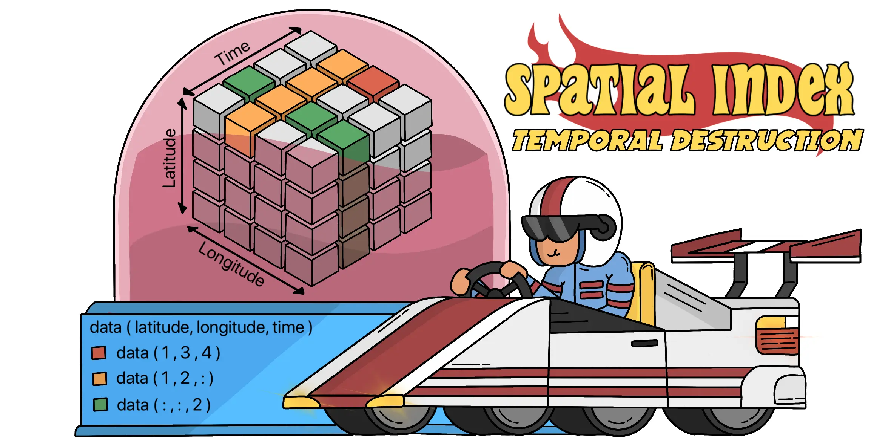
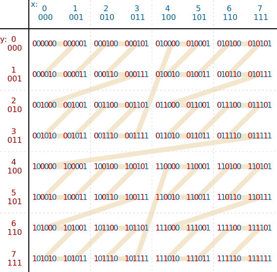

Spatial Index: Space-Filling Curves
·
System Wisdom·
#Database
#Spatial Index 12 min read
12 min read

0. Overview
Spatial data has grown (/is growing) rapidly thanks to web services tracking where and when users do things. Most applications add location tags and often allow users check in specific places and times. This surge is largely due to smartphones, which act as location sensors, making it easier than ever to capture and analyze this type of data.
The goal of this post is to dive into the different spatial indexes that are widely used in both relational and non-relational databases. We'll look at the pros and cons of each type, and also discuss which indexes are the most popular today.

Figure 0: Types of Spatial Indexes
Spatial indexes fall into two main categories: space-driven and data-driven structures. Data-driven structures, like the R-tree family, are tailored to the distribution of the data itself. Space-driven structures include partitioning trees (kd-trees, quad-trees), space-filling curves (Z-order, Hilbert), and grid systems (H3, S2, Geohash), each partitioning space to optimize spatial queries. This classification isn't exhaustive, as many other methods cater to specific needs in spatial data management.
1. Foundation
To understand the need for spatial indexes, or more generally, a way to index multi-dimensional data.

Figure 1: Initial Table Structure
Consider a table with the following fields: device, X, and Y, all of which are integers ranging from 1 to 4. Data is inserted into this table randomly by an external application.

Figure 2: Unpartitioned and Unsorted Table
Currently, the table is neither partitioned nor sorted. As a result, the data is distributed across all files (8 files), each containing a mix of all ranges. This means all files are similar in nature. Running a query like Device = 1 and X = 2 requires a full scan of all files, which is inefficient.

Figure 3: Partitioning by Device
To optimize this, we partition the table by the device field into 4 partitions: Device = 1, Device = 2, Device = 3, and Device = 4. Now, the same query (Device = 1 and X = 2) only needs to scan the relevant partition. This reduces the scan to just 2 files.

Figure 4: Sorting Data Within Partitions
Further optimization can be achieved by sorting the data within each partition by the X field. With this setup, each file in a partition holds a specific range of X values. For example, one file in the Device = 1 partition hold X = 1 to 2. This makes the query Device = 1 and X = 2 even more efficient.

Figure 5: Limitation with Sorting on a Single Field
However, if the query changes to Device = 1 and Y = 2, the optimization is lost because the sorting was done on X and not Y. This means the query will still require scanning the entire partition for Device = 1, bringing us back to a less efficient state.
At this point, there's a clear need for efficiently partitioning 2-dimensional data. Why not use B-tree with a composite index? A composite index prioritizes the first column in the index, leading to inefficient querying for the second column. This leads us back to the same problem, particularly when both dimensions need to be considered simultaneously for efficient querying.
2. Space-Filling Curves
X and Y from 1 to 4 on a 2D axis. The goal is to traverse the data and number them accordingly (the path). using Space-Filling Curves AKA squiggly lines.

Figure 6: Exploring Space-Filling Curve and Traversing the X-Y Axis
Starting from Y = 1 and X = 1, as we traverse up to X = 1 and Y = 4, it's evident that there is no locality preservation (Lexicographical Order). The distance between points (1, 4) and (1, 3) is 6, a significant difference for points that are quite close to each other. Grouping this data into files keeps unrelated data together and ended up sorting by one column while ignoring the information in the other column (back to square one). i.e. X = 2 leads to a full scan.
2.1. Z-Order Curve - Intuition
A recursive Z pattern, also known as the Z-order curve, is an effective way to preserve locality in many cases.

Figure 7: Z-Order Curve Types
The Z-order curve can take many shapes, depending on which coordinate goes first. The typical Z-shape occurs when the Y-coordinate goes first (most significant bit), and the upper left corner is the base. A mirror image Z-shape occurs when the Y-coordinate goes first and the lower left corner is the base. An N-shape occurs when the X-coordinate goes first and the lower left corner is the base.
Z-order curve grows exponentially, and the next size is the second-order curve that has 2-bit sized dimensions. Duplicate the first-order curve four times and connect them together to form a continuous curve.

Figure 8: Z-Order Curve
Points (1, 4) and (1, 3) are separated by a single square. With 4 files based on this curve, the data is not spread out along a single dimension. Instead, the 4 files are clustered across both dimensions, making the data selective on both X and Y dimensions.
2.2. Hilbert Curve - Intuition
The Hilbert curve is another type of space-filling curve that serve a similar purpose, rather than using a Z-shaped pattern like the Z-order curve, it uses a gentler U-shaped pattern. When compared with the Z-order curve in Figure 9, it’s quite clear that the Hilbert curve always maintains the same distance between adjacent data points.

Figure 9: First Order and Second Order Hilbert Curve
Hilbert curve also grows exponentially, to do so, duplicate the first-order curve and connect them. Additionally, some of the first-order curves are rotated to ensure that the interconnections are not larger than 1 point.

Comparing with the Z-curves (from Figure 8, higher-order in Figure 18), the Z-order curve is longer than the Hilbert curve at all levels, for the same area.

Figure 10: Hilbert Curve Types
Although there are quite a lot of varaints of Hilbert curve, the common pattern is to rotate by 90 degrees and repeat the pattern in next higher order(s).

Figure 11: Hilbert Curve
Hilbert curves traverse through the data, ensuring that multi-dimensional data points that are close together in 2D space remain close together along the 1D line or curve, thus preserving locality and enhancing query efficiency across both dimensions.
2.3. Z-Order Curve and Hilbert Curve - Comparison
Taking an example, if we query for X = 3, we only need to search 2 of the files. Similarly, for Y = 3, the search is also limited to 2 files in both Z-order and Hilbert Curves

Figure 12: Z-Order Curve - Example
Unlike a hierarchical sort on only one dimension, the data is selective across both dimensions, making the multi-dimensional search more efficient.

Figure 13: Hilbert Curve - Example
Although both the curves give a similar advantage, the main shortcoming with Z-order curve: it fails to maintain perfect data locality across all the data points in the curve. In Figure 12, notice the data points between index 8 and 9 are further apart. As the size of the Z-curve increases, so does the distance between such points that connect different parts of curve together.
Hilbert curve is more preferred over the Z-order curve for ensuring better data locality and Z-order curve is still widely used because of it's simplicity.
2.4. Optimizing with Z-Values
In the examples so far, we have presumed that the X and Y values are dense, meaning that there is a value for every combination of X and Y. However, in real-world scenarios, data can be sparse, with many X, Y combinations missing

Figure 14: Flexibility in Number of Files
The number of files (4 in the prior examples) isn't necessarily dictated. Here's what 3 files would look like using both Z-order and Hilbert curves. The benefits still holds to an extent because of the space-filling curve, which efficiently clusters related data points.

Figure 15: Optimizing with Z-Values
To improve efficiency, we can use Z-values. If files are organized by Z-values, each file has a min-max Z-value range. Filters on X and Y can be transformed into Z-values, enabling efficient querying by limiting the search to relevant files based on their Z-value ranges.

Figure 16: Efficient Querying with Min-Max Z-Values
Consider a scenario where the min-max Z-values of 3 files are 1 to 5, 6 to 9, and 13 to 16. Querying by 2 ≤ X ≤ 3 and 3 ≤ Y ≤ 4 would initially require scanning 2 files. However, if we convert these ranges to their Z-value equivalent, which is 10 ≤ Z ≤ 15, we only need to scan one file, since the min-max Z-values are known.
2.5. Z-Order Curve - Implementation
So far, wkt, Z-ordering arranges the 2D pairs on a 1-dimensional line. More importantly, values that were close together in the 2D plane would still be close to each other on the Z-order line. The implementation goal is to derive Z-Values that preserves spatial locality from M-dimensional data-points (Z-ordering is not limited to 2-dimensional space and it can be abstracted to work in any number of dimensions)
Z-order bit-interleaving is a technique that interleave bits of two or more values to create a 1-D value while spatial locality is preserved:

Figure 17: Bit Interleaving
Example: 4-bit values X = 10, Y = 12 on a 2D grid, X = 1010, Y = 1100, then interleaved value Z = 1110 0100 (228)
2.5a. Z-Order Curve - Snippet
public class ZOrderCurve {
// Function to interleave bits of two integers x and y
public static long interleaveBits(int x, int y) {
long z = 0;
for (int i = 0; i < 32; i++) {
z |= (long)((x & (1 << i)) << i) | ((y & (1 << i)) << (i + 1));
}
return z;
}
// Function to compute the Z-order curve values for a list of points
public static long[] zOrderCurve(int[][] points) {
long[] zValues = new long[points.length];
for (int i = 0; i < points.length; i++) {
int x = points[i][0];
int y = points[i][1];
zValues[i] = interleaveBits(x, y);
}
return zValues;
}
public static void main(String[] args) {
int[][] points = { {1, 2}, {3, 4}, {5, 6} };
long[] zValues = zOrderCurve(points);
System.out.println("Z-order values:");
for (long z : zValues) {
System.out.println(z);
}
}
}

Figure 18: 2-D Z-Order Curve Space
From the above Z-order keys, we see that points that are close to each other in the original space have close Z-order keys. For instance, points sharing the prefix 000 in their Z-order keys are close in 2D space, while points with the prefix 110 indicate greater distance.
Figure 19: 2-D Z-Order Curve Space and a Query Region
Now that we know how to calculate the z-order keys, we can use the z-order keys to define a range of values to read (reange-query), to do so, we have to find the lower and upper counds. For example: The query rectangle: 2 ≤ X ≤ 3 to 4 ≤ Y ≤ 5, the lower bound is Z-Order(X = 2, Y = 4) = 100100 and upper bound is (X = 3, Y = 5) = 100111, translates to Z-order values of 36 and 39.
Figure 20: 2-D Z-Order Curve Space and a Query Region (The Problem)
However, range queries based on Z-Order keys are not always present in a continuous Z path. For example: The query rectangle 1 ≤ X ≤ 3 to 3 ≤ Y ≤ 4, the lower bound Z-Order(X = 1, Y = 3) = 001011 and upper bound is (X = 3, Y = 4) = 100101, translates to Z-order values of 11 and 37 - optimized using subranges.
The Z-order curve weakly preserves latitude-longitude proximity, i.e. two locations that are close in physical distance are not guaranteed to be close following the Z-curve
2.6. Hilbert Curve - Implementation
From Section 2.2, wkt: The Hilbert curve implementation converts 2D coordinates to a single scalar value that preserves spatial locality by recursively rotating and transforming the coordinate space.
In the code snippet: The xyToHilbert function computes this scalar value using bitwise operations, while the hilbertToXy function reverses this process. This method ensures that points close in 2D space remain close in the 1D Hilbert curve index, making it useful for spatial indexing.
2.6a. Hilbert Curve - Snippet
public class HilbertCurve {
// Rotate/flip a quadrant appropriately
private static void rot(int n, int[] x, int[] y, int rx, int ry) {
if (ry == 0) {
if (rx == 1) {
x[0] = n - 1 - x[0];
y[0] = n - 1 - y[0];
}
// Swap x and y
int temp = x[0];
x[0] = y[0];
y[0] = temp;
}
}
// Convert (x, y) to Hilbert curve distance
public static int xyToHilbert(int n, int x, int y) {
int d = 0;
int[] ix = { x };
int[] iy = { y };
for (int s = n / 2; s > 0; s /= 2) {
int rx = (ix[0] & s) > 0 ? 1 : 0;
int ry = (iy[0] & s) > 0 ? 1 : 0;
d += s * s * ((3 * rx) ^ ry);
rot(s, ix, iy, rx, ry);
}
return d;
}
// Convert Hilbert curve distance to (x, y)
public static void hilbertToXy(int n, int d, int[] x, int[] y) {
int rx, ry, t = d;
x[0] = y[0] = 0;
for (int s = 1; s < n; s *= 2) {
rx = (t / 2) % 2;
ry = (t ^ rx) % 2;
rot(s, x, y, rx, ry);
x[0] += s * rx;
y[0] += s * ry;
t /= 4;
}
}
public static void main(String[] args) {
int n = 16; // size of the grid (must be a power of 2)
int x = 5;
int y = 10;
int d = xyToHilbert(n, x, y);
System.out.println("The Hilbert curve distance for (" + x + ", " + y + ") is: " + d);
int[] point = new int[2];
hilbertToXy(n, d, point, point);
System.out.println("The coordinates for Hilbert curve distance " + d + " are: (" + point[0] + ", " + point[1] + ")");
}
}
2.7. Z-Order Curve and Hilbert Curve - Conclusion
Usage: Insert data points and their Z-order keys/Hilbert Keys (let's call it Z and H keys) into a one-dimensional hierarchical index structure, such as a B-Tree or Quad-Tree. For range or nearest neighbor queries, convert the search criteria into Z/H keys or range of keys. After retrieval, further filter the results as necessary to remove any garbage values.
To conclude: Space-Filling Curves such as Z-Order/Hilbert indexing is a powerful technique to query higher-dimensional data, especially as the data volumes grows. By combining bits from multiple dimensions into a single value, space-Filling Curves indexing preserves spatial locality, enabling efficient data indexing and retrieval.
However, as seen in Section 2.5, large jumps along the Z-Order curve can affect certain types of queries (better with Hilbert curves Section 2.2). The success of Z-Order indexing relies on the data's distribution and cardinality. Therefore, it is essential to evaluate the nature of the data, query patterns, performance needs and limitation(s) of indexing strategies.
3. References
1. "Programming the Hilbert curve" (American Institue of Physics (AIP) Conf. Proc. 707, 381 (2004)).
2. Wikipedia. “Z-order curve,” [Online]. Available: https://en.wikipedia.org/wiki/Z-order_curve.
3. Amazon Web Services, “Z-order indexing for multifaceted queries in Amazon DynamoDB – Part 1,” [Online]. Available: https://aws.amazon.com/blogs/database/z-order-indexing-for-multifaceted-queries-in-amazon-dynamodb-part-1/. [Accessed: 10-Jun-2024].
4. N. Chandra, “Z-order indexing for efficient queries in Data Lake,” Medium, 20-Sep-2021. [Online]. Available: https://medium.com/@nishant.chandra/. [Accessed: 10-Jun-2024]z-order-indexing-for-efficient-queries-in-data-lake-48eceaeb2320. [Accessed: 10-Jun-2024].
5. YouTube, “Z-order indexing for efficient queries in Data Lake,” [Online]. Available: https://www.youtube.com/watch?v=YLVkITvF6KU. [Accessed: 10-Jun-2024].

Cite this article as: Adesh Nalpet Adimurthy. (Jun 11, 2024). Spatial Index: Space-Filling Curves. PyBlog. https://www.pyblog.xyz/spatial-index-space-filling-curve
 #index
#index